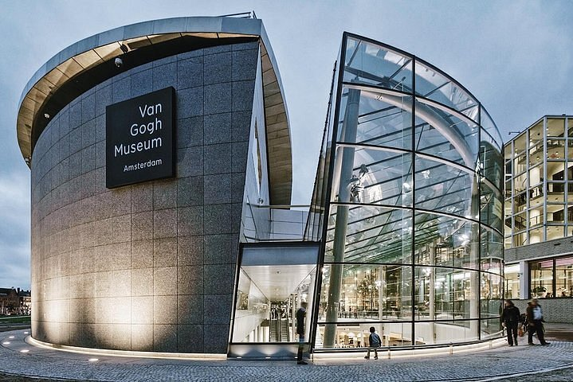
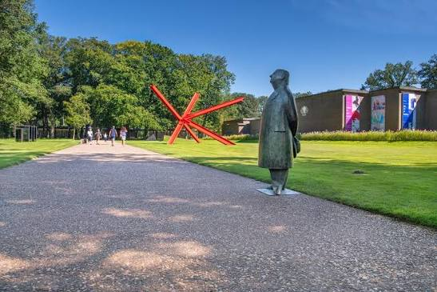
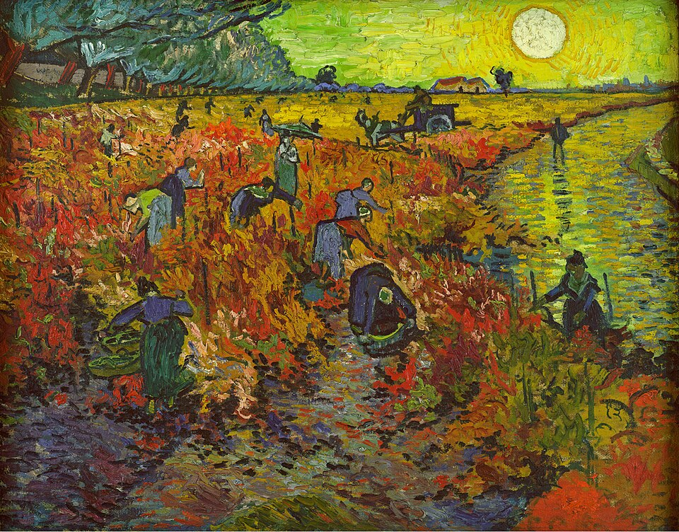

Le Van Gogh Museum
Amsterdam, Pays-Bas
Il possède une importante collection de tableaux, dessins et lettres de l'artiste.
Un artiste reconnu dans le monde entier
Ambiance musicale
Même si Vincent van Gogh n'a pas connu une grande reconnaissance commerciale pendant sa vie, son travail est devenu extrêmement célèbre après sa mort.
Aujourd'hui, il est considéré comme l'un des artistes les plus influents de l'histoire de la peinture.
Van Gogh a contribué à transformer la peinture grâce à sa liberté artistique et à son utilisation expressive des couleurs.
Son travail a influencé plusieurs mouvements artistiques, notamment :
Après sa mort, son frère Theo et surtout sa belle-sœur Johanna van Gogh-Bonger ont joué un rôle important dans la conservation et la diffusion de ses œuvres et de sa correspondance.
Progressivement, ses tableaux ont été exposés dans de nombreuses galeries et musées internationaux.

Amsterdam, Pays-Bas
Il possède une importante collection de tableaux, dessins et lettres de l'artiste.
Paris, France
Il expose plusieurs œuvres importantes de Van Gogh.

Pays-Bas
Il possède une importante collection de peintures et de dessins de l'artiste.
Regardez cette vidéo pour découvrir le musée et ses œuvres. Pour une visite plus complète, retrouvez d'autres vidéos sur la chaîne YouTube officielle : @VanGoghMuseum.

Vincent van Gogh a laissé un héritage artistique exceptionnel. Son histoire nous rappelle que l'art est aussi un moyen d'exprimer les émotions, les expériences et la vision personnelle du monde.
Son œuvre continue d'inspirer les artistes et de toucher les générations à travers le monde.